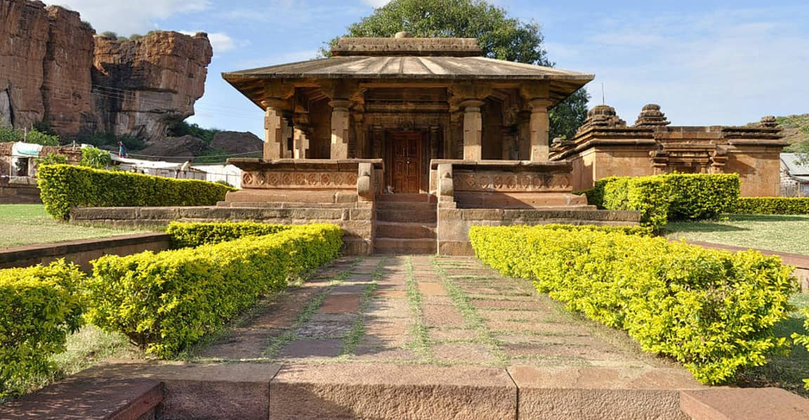
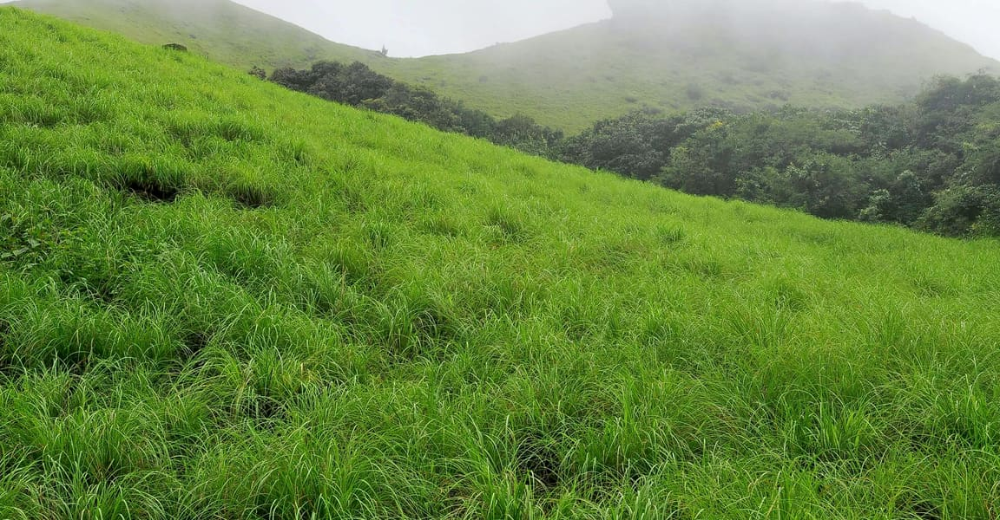

Kasargod
land of forts

Mallikarjuna Temple
must to visit

Ranipuram
the poor man's ootty
land of forts
must to visit
the poor man's ootty
Kasargod is a small coastal town in Northern Pary of Kerala displaying a delightful blend of various religions, culture and bounty of nature. Blessed with majestic forts, lofty hills, beautiful offbeat backwaters, temples and pristine beaches, the town oozes charm and tranquillity from every aspect. It is gaining popularity among people from nearby cities owing to the presence of luxury resorts.
Kasargod is a small coastal town in Northern Pary of Kerala displaying a delightful blend of various religions, culture and bounty of nature. Blessed with majestic forts, lofty hills, beautiful offbeat backwaters, temples and pristine beaches, the town oozes charm and tranquillity from every aspect. It is gaining popularity among people from nearby cities owing to the presence of luxury resorts.
India declared Bekal Fort a special tourism area in 1992 and formed Bekal Tourism Development Corporation three years later to promote it. Bekal Fort is a medieval fort built by Shivappa Nayaka of Keladi in 1650 AD, at Bekal. It is the largest fort in Kerala, spreading over 40 acres (160,000 m2). The fort appears to emerge from the sea.
Ranipuram is a village and a major tourist attraction in the Kasaragod district of the Indian state of Kerala. It is located near Talakaveri Wildlife Sanctuary in Kerala-Karnataka border. Visits to the peak are organized by the "Chempra Peak VSS" under the control of the South Wayanad Forest Development Agency; guides are provided for trekking.
Mallikarjuna Temple (also simply known as Srisailam Temple) is a Hindu temple dedicated to the deity Shiva, located at Srisailam in Indian state of Andhra Pradesh. It is significant to the Hindu sects of both Shaivam as this temple is referred to as one of the twelve Jyothirlingas of Lord Shiva. Here Parvati is worshiped as "Mallika" and Shiva is worshipped as "Arjuna".
Hosdurg Fort is a fort in Kanhangad which is part of Kasaragod district in Kerala state. Hosdurg Fort with its round bastion looks imposing from a distance. Somashekara Nayaka from the Keladi Nayaka dynasty of Ikkeri built this fort. The place is made well known by the Nithyanandasram with 45 caves. The fort is now in ruins, but located nearby is a school and some government offices. To the south-west of the fort is a temple that was also built by the Nayaks. The temple, dedicated to Shiva, is named the Poonkavanam Karpooreswara Temple.
Valiyaparamba is fed by four rivers and dotted with numerous little islands. Valiyaparamba, a hinterland separated from the mainland, is a noted fishing centre in the district. A Bekal Fort stands on a headland that runs into the sea. A National Waterway passes through the island.